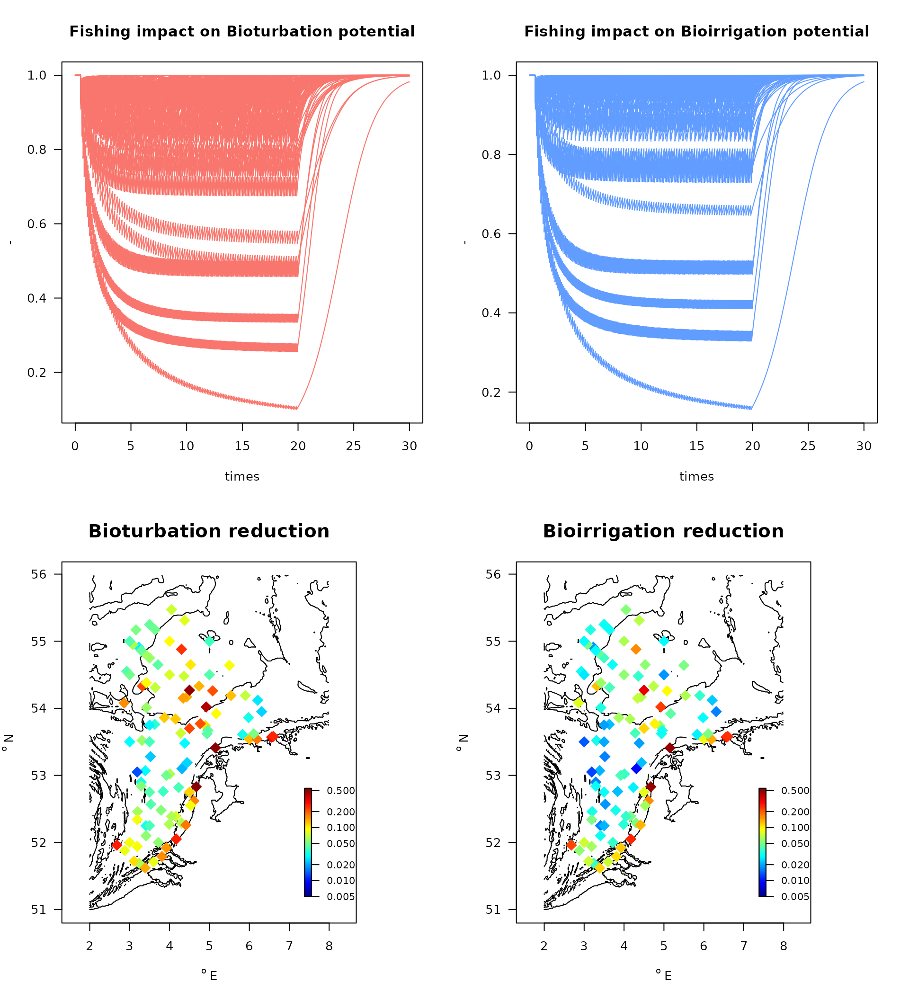

R-package Bfiat - Modelling trawling effects on ecosystem functioning - MWTL data
Karline Soetaert and Olivier Beauchard
current 25 July, 2025
Source:vignettes/MWTL_EF.Rmd
MWTL_EF.RmdAbstract
The impact of bottom trawling on sediment ecosystem functions in the Dutch part of the Northsea is estimated. We use monitoring data from 103 stations in the area (MWTL data set), and impose fishing intensities estimated for each of these stations. We then use the output of the fishing model to estimate the effect of fishing on the bioturbation and bioirrigation in these stations.Software.
The fishing impact models run in the open source framework R (R core team, 2025) and have been implemented in the Bfiat R-package (Soetaert and Beauchard, 2024).
The R-package Btrait (Soetaert and Beauchard, 2022) contains functions to work on density and trait datasets.
The packages Btrait and Bfiat are available on github (https://github.com/EMODnet/Btrait and https://github.com/EMODnet/Bfiat).
Data requirements
Central in the impact analysis is the merging of model output with trait data
species-specific density trajectories
The impact of fishing on ecosystem functions uses as input the density trajectories of species, under fishing pressure. These density trajectories can be obtained with function density_perturb from the Bfiat package. In the vignette MWTL, it is described how this can be done for the MWTL dataset.
trait characteristics of the benthic species.
- The reworking () and mobility mode () of species, as well as their weight () and , is used to estimate their “bioturbation potential”, a parameter that determines sediment mixing.
The formula for estimating the bioturbation Index for taxon i (as in Querios et al., 2013) is:
- The feeding type, , burrowing type, , injection depth, combined with the species mean weight and , is used to estimate the species’ “bioirrigation potential”, which reflects the intensity at which burrows are flushed.
The formula for estimating the bioirrigation Index for taxon i (as in Wrede et al., 2018) is: ,
Several trait databases are available from the R-package Btrait.
The traits required for calculating the bioturbation potential (Traits_Db) were compiled in Queiros et al. (2013).
Traits to estimate bioirrigation potential (Traits_irr) were described in Wrede et al. (2018); they were derived from the Traits_nioz dataset.
Running the fishing impact model
The code to run the model for all 102 MWTL stations at once is given below.
The how and why is in another vignette: MWTL_fishing
#### taxon density ####
MeanMWTL <- get_density(data = MWTL$density, descriptor = station, taxon = taxon,
value = data.frame(density, biomass), averageOver = year)
MWTLtaxa <- sort(unique(MeanMWTL$taxon))
#### taxon traits ####
meta <- metadata(Traits_nioz) # description of trait modalities
# *substratum depth*, fuzzy coded
subD <- subset(meta, subset = (trait == "Substratum depth distribution"))
TraitsDD <- get_trait(taxon = MWTLtaxa, taxonomy = Taxonomy,
trait = Traits_nioz[, c("taxon", subD$colname)])
colnames(TraitsDD)[-1] <- subD$modality
# *age at maturity*, averaged
subA <- subset(meta, subset = (trait == "Age at maturity"))
TraitsAAM <- get_trait(taxon = MWTLtaxa, taxonomy = Taxonomy,
trait = Traits_nioz[, c("taxon", subA$colname)],
trait_class = subA$trait, trait_score = subA$value)
#### merge with fisheries data ####
TraitsAll <- merge(TraitsAAM, TraitsDD, by = "taxon")
MWTLtrait <- merge(MeanMWTL, TraitsAll, by = "taxon")
MWTLtrait <- merge(MWTLtrait, subset(MWTL$abiotics, select = c(station, sar, gpd)),
by = "station")
MWTLtrait <- subset(MWTLtrait, subset = ! is.na(Age.at.maturity))
#### model parameters ####
# intrinsic rate of natural increase
MWTLtrait$r <- par_r(age_at_maturity = MWTLtrait$Age.at.maturity)
# depletion fraction (d)
MWTLtrait$d <- par_d(gpd = MWTLtrait$gpd,
fDepth = MWTLtrait[, c( "0", "0-5", "5-15", "15-30", ">30")],
uDepth = c( 0, 0, 5, 15, 30))
# carrying capacity (K)
MWTLtrait$K <- par_K(density = MWTLtrait$density, sar = MWTLtrait$sar,
r = MWTLtrait$r, d = MWTLtrait$d)
# Remove taxa where the model cannot find a solution (few taxa)
ii <- which(is.na(MWTLtrait$K))
cat ("the number of occurrences removed (not compatible with model) is:", length(ii),
"from a total of ", nrow(MWTLtrait))## the number of occurrences removed (not compatible with model) is: 16 from a total of 8271
MWTLtrait <- MWTLtrait[-ii,]
#### run the model, 20 years fishing, followed by 10 years without fishing ####
taxon_names <- paste(MWTLtrait$station, MWTLtrait$taxon, sep = "_")
times <- seq(from = 0, to = 30, length.out = 10000)
densFishing <- density_perturb(parms = MWTLtrait,
times = times,
taxon_names = taxon_names,
tend_perturb = 20) The bioturbation and bio-irrigation potential
The functions get_Db_model and get_irr_model estimate the bioturbation and bio-irrigation potential based on dynamic model output for the species. They require the trait information, and the individual weight of the species. The taxonomy is passed to allow retrieving traits for undocumented species based on their taxonomic relationships. Argument taxon_names assigns each column in the model output to a species that can be located in the trait database or in the taxonomy.
First the mean weight is estimated based on biomass and density:
# estimate the weight
MWTLtrait$WW <- MWTLtrait$biomass / MWTLtrait$density
system.time(
Db <- get_Db_model(model = densFishing,
trait = Traits_Db,
taxon_names = MWTLtrait$taxon,
taxonomy = Taxonomy,
weight = MWTLtrait$WW)
) ## user system elapsed
## 1.521 0.254 1.776
Irr <- get_irr_model(model = densFishing,
trait = Traits_irr,
taxon_names = MWTLtrait$taxon,
taxonomy = Taxonomy,
weight = MWTLtrait$WW)The results have in their first column, time, followed by the BPc or IPc contribution of all species, and the last column is the sum of all these indices. We strip the output from the first and last column and then sum the indices, per station, for all times, to obtain the total BPc and IPc per station:
DB <- data.frame(Db[, -c(1, ncol(Db))]) # remove first and last column
DBC <- sapply(split.default(DB, MWTLtrait$station), # split in stations
FUN = rowSums, na.rm = TRUE) # take row sums
IR <- data.frame(Irr[, -c(1, ncol(Irr))])
IR <- sapply(split.default(IR, MWTLtrait$station),
FUN = rowSums, na.rm = TRUE)We then create relative values by dividing all columns by the maximum, and plot the results.
Dbrel <- sweep(DBC,
MARGIN = 2,
STATS = apply(DBC, # max of each column
MARGIN = 2,
FUN = max),
FUN = "/") # divide by the max
Irrrel <- sweep(IR,
MARGIN = 2,
STATS = apply(IR,
MARGIN = 2,
FUN = max),
FUN = "/")
# dB reduction - the larger the value the more bioturbation is impacted
Dbred <- 1 - apply(Dbrel,
MARGIN = 2,
FUN = min)
Irrred <- 1 - apply(Irrrel,
MARGIN = 2,
FUN = min)
depletion <- data.frame(MWTL$stations,
Dbred = Dbred,
Irrred = Irrred)
par(mfrow = c(2, 2), las = 1)
matplot(times, Dbrel,
main = "Fishing impact on Bioturbation potential", ylab = "-",
col = 2, lty = 1, type = "l")
matplot(times, Irrrel,
main = "Fishing impact on Bioirrigation potential", ylab = "-",
col = 4, lty = 1, type = "l")
with(depletion,
map_MWTL(x, y, colvar = Dbred,
main = "Bioturbation reduction", clab = "-",
clim = c(0.005, 0.55),
pch = 18, log= "c", cex = 2))
with(depletion,
map_MWTL(x, y, colvar = Irrred,
main = "Bioirrigation reduction", clab = "-",
clim = c(0.005, 0.55),
pch = 18, log= "c", cex = 2))
References
Beauchard O, Brind’Amour A, Schratzberger M, Laffargue P, Hintzen NT, Somerfield PJ, Piet G (2021) A generic approach to develop a trait-based indicator of trawling-induced disturbance. Mar Ecol Prog Ser 675:35-52. https://doi.org/10.3354/meps13840
Beauchard, O., Murray S.A. Thompson, Kari Elsa Ellingsen, Gerjan Piet, Pascal Laffargue, Karline Soetaert, 2023. Assessing sea floor functional diversity and vulnerability. Marine Ecology Progress Series v708, p21-43, https://www.int-res.com/abstracts/meps/v708/p21-43
J. Depestele, K. Degrendele, M. Esmaeili, A. Ivanovic, S. Kroger, F.G. O’Neill, R. Parker, H. Polet, M. Roche, L.R. Teal, B. Vanelslander, A.D. Rijnsdorp. (2018). Comparison of mechanical disturbance in soft sediments due to tickler-chain SumWing trawl versus electro-fitted PulseWing trawl. ICES J. Mar. Sci. 76, 312–329.
Hiddink, JG, Jennings, S, Sciberras, M, et al. Assessing bottom trawling impacts based on the longevity of benthic invertebrates. J Appl Ecol. 2019; 56: 1075– 1084. https://doi.org/10.1111/1365-2664.13278
Hiddink, Jan Geert, Simon Jennings, Marija Sciberras, Claire L. Szostek, Kathryn M. Hughes, Nick Ellis, Adriaan D. Rijnsdorp, Robert A. McConnaughey, Tessa Mazor, Ray Hilborn, Jeremy S. Collie, C. Roland Pitcher, Ricardo O. Amoroso, Ana M. Parma, Petri Suuronen, and Michel J. Kaiser, 2017. Global analysis of depletion and recovery of seabed biota after bottom trawling disturbance. Proc. Nat. Aca. Sci, 114 (31) 8301-8306 https://doi.org/10.1073/pnas.161885811.
Holstein j. (2018). worms: Retrieving Aphia Information from World Register of Marine Species. R package version 0.2.2. https://CRAN.R-project.org/package=worms
ICES Technical Service, Greater North Sea and Celtic Seas Ecoregions, 29 August 2018 sr.2018.14 Version 2: 22 January 2019 https://doi.org/10.17895/ices.pub.4508 OSPAR request on the production of spatial data layers of fishing intensity/pressure.
C.R. Pitcher, J.G. Hiddink, S. Jennings, J. Collie, A.M. Parma, R. Amoroso, T. Mazor, M. Sciberras, R.A. McConnaughey, A.D. Rijnsdorp, M.J. Kaiser, P. Suuronen, and R. Hilborn, 2022. Trawl impacts on the relative status of biotic communities of seabed sedimentary habitats in 24 regions worldwide. PNAS. https://doi.org/10.1073/pnas.2109449119
C.R. Pitcher, N. Ellis, S. Jennings, J.G. Hiddink, T. Mazor, M.J.Kaiser, M.I. Kangas, R.A. McConnaughey, A.M. Parma, A.D. Rijnsdorp, P. Suuronen, J.S. Collie, R. Amoroso, K.M. Hughes and R. Hilborn, 2017. Estimating the sustainability of towed fishing-gearimpacts on seabed habitats: a simple quantitative riskassessment method applicable to data-limited fisheries. Methods in Ecology and Evolution2017, 8, 472–480doi: 10.1111/2041-210X.12705
Queiros, A. M., S. N. R. Birchenough, J Bremner, J.A. Godbold, R.E. Parker, A. Romero-Ramirez, H. Reiss, M. Solan, P. J. Somerfield, C. Van Colen, G. Van Hoey, S. Widdicombe, 2013. A bioturbation classification of European marine infaunal invertebrates. Ecology and Evolution 3 (11), 3958-3985
R Core Team (2021). R: A language and environment for statistical computing. R Foundation for Statistical Computing, Vienna, Austria. URL https://www.R-project.org/.
Soetaert Karline, Olivier Beauchard (2022). Btrait: Working with Biological density, taxonomy, and trait composition data. R package version 1.0.2.
Soetaert Karline, Olivier Beauchard (2022). Bfiat: Bottom Fishing Impact Assessment Tool. R package version 0.0.1.
Verhulst, Pierre-François (1845). “Recherches mathématiques sur la loi d’accroissement de la population” [Mathematical Researches into the Law of Population Growth Increase]. Nouveaux Mémoires de l’Académie Royale des Sciences et Belles-Lettres de Bruxelles. 18: 8.
Wrede, A., J.Beermann, J.Dannheim, L.Gutow, T.Brey, 2018. Organism functional traits and ecosystem supporting services - A novel approach to predict bioirrigation. Ecological indicators, 91, 737-743.